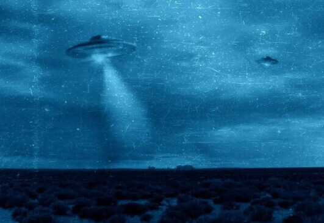

Życie pozaziemskie
Spis treści:
Pytanie, które ludzie stawiają sobie już wielu lat brzmi: Czy w kosmosie istnieje życie poza Ziemią? Przecież wokół nas jest tyle światów, układów ciał niebieskich, kosmos jest tak bogaty i zróżnicowany. Zainteresowanie obcymi formami życia wzrosło w ostatnich dekadach jeszcze bardziej, a to za sprawą nieustannemu postępowi technicznemu oraz filmom poświęconym tematyce science fiction.
Natomiast jeśli kosmici faktycznie istnieją, to dlaczego jeszcze ich nie spotkaliśmy? W obecnych czasach dysponujemy tak zaawansowaną technologią, przemierzamy nieustannie kosmos za pomocą sond, obserwujemy nocne niebo poprzez teleskopy, ale nadal naukowcom nie udało się udwowodnić ich istnienia
Możliwe, że minęliśmy się z nimi i już dawno wyginęli, może śpią, a może żyją w przestrzeni innych wymiarów niż my. A może przyczyniliśmy się do ich zniknięcia, rozsiewając po kosmosie nasze sondy?
Co sądzi na ten temat nauka?
W chwili obecnej, jak już wyżej było wspomniane, nie posiadamy rzetelnych danych naukowych na temat istnienia inteligentnych istot pozaziemskich. Wielu badaczy zajmujących się astronomią, astrobiologią i filozofią sądzi, iż choćby z przyczyn statystycznych gdzieś we Wszechświecie musi istnieć życie, w tym świadome.
Sprzeczność między brakiem oczywistych dowodów na istnienie kosmitów a koniecznością ich istnienia wynikającą z powszechnie akceptowanych teorii naukowych określa się jako paradoks Fermiego.
Teoria Ericha von Dänikena
Erich von Däniken, szwajcarski pisarz i publicysta zakładający, że Ziemię mogły w odległej przeszłości odwiedzać istoty pozaziemskie. Stwierdził, że to one wpłynęły na rozwój starożytnych cywilizacji i miały swój wkład w budowie piramid, posągów, jak i antycznych miast.
Zagadkowa twarz na Marsie
Autor: Łukasz Żmijewski
25 lipca 1976 roku sonda Viking 1 sofotografowała na Marsie w regionie Cydonia nietypową strukturę geologiczną. Wypiętrzenie o rozmiarach 1,5×3 km ze względu na specyficzną grę świateł i cieni było łudząco podobne do ludzkiej twarzy.
Publikacja fotografii kilka dni później wywołała lawinę spekulacjii dla zwolenników teorii spiskowych stała się mocnym dowodem na istnienie na Marsie obcej cywilizacji. Zdjęcia o znacznie wyższej rozdzielczości wykonane w ramach misji Mars Global Surveyor czy Mars Express nie wykazywały już tak wyraźnego podobieństwa do ludzkiej twarzy, choć ogólne zarysy wciąż były zauważalne. Viking 1 swoją słynną fotografię wykonał w dość słabej jakości, gdy Słońce było położone nisko nad horyzontem.
Udało się jednoznacznie ustalić, że legendarna twarz to nic innego jak rodzaj struktury morfologicznej zbliżonej do ziemskich gór stołowych. Główną przyczyną ich powstawania jest zróżnicowana odporność skał na erozję. Wypiętrzone tektonicznemasywy poddawane są wpływom czynników zewnętrznych. Skały mniej odporne szybciej ulegają zniszczeniu. Pozostają charakterystyczne i bardzo widowiskowe rozległe ostańce skał odporniejszych o spłaszczonym szczycie i stromych zboczach.
Twarz na Marsie nie stanowi dowodu na istnienie cywilizacji pozaziemskich. Niewątpliwym plusem tego typu widowiskowych odkryć jest jednak fakt, że przyczyniają się one do wzrostu zainteresowania tematyką astronomiczną.
Źródło: Mars Global Surveyor Project, [NASA]
Źródło: Viking Project, [NASA]
Źródła informacji:
pl.wikipedia.org, piramidyikosmos.pl, national-geographic.pl, www.sciencefocus.com, www.focus.pl